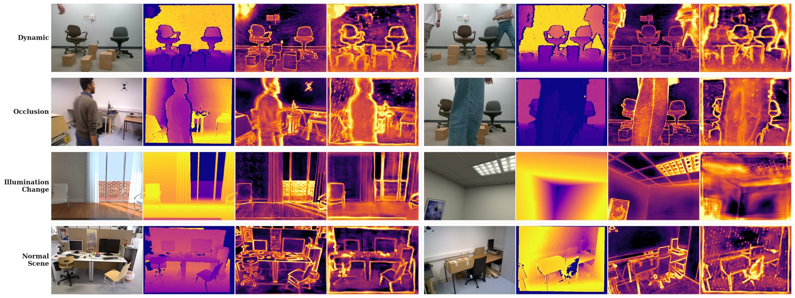
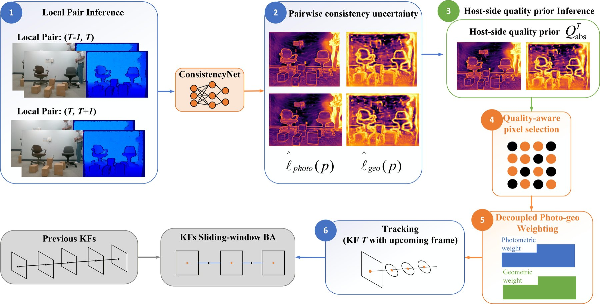
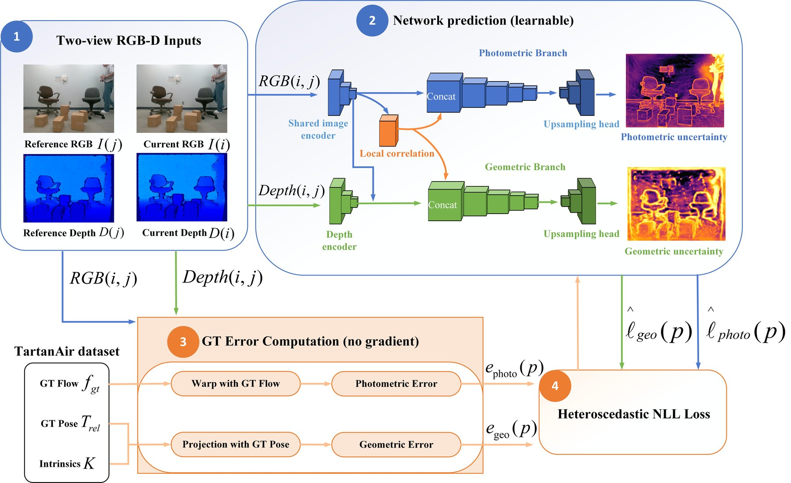
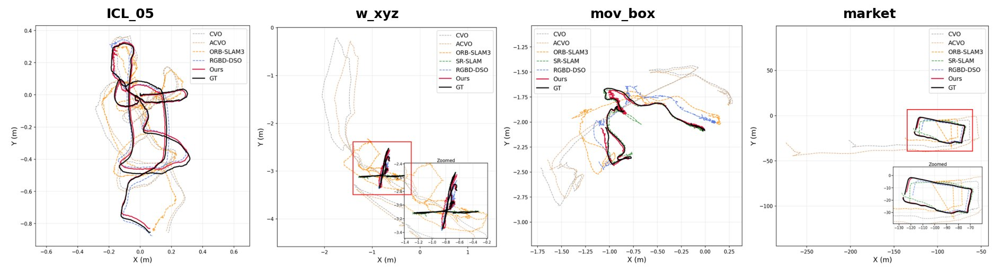

Preprint 2026
Con-DSO
Learning short-horizon consistency priors for RGB-D direct sparse odometry
1Japan Advanced Institute of Science and Technology 2Shenyang University of Chemical Technology

01 · Abstract
Which pixels can direct tracking still trust?
RGB-D direct visual odometry benefits from metric depth, but it degrades when dynamic objects, occlusions, illumination changes and unreliable depth violate the short-horizon photometric and depth-geometric consistency that direct alignment assumes. Existing approaches handle these cases with semantic filtering, explicit occlusion reasoning, illumination adaptation or hand-crafted geometric criteria, and often rely on external modules or fixed assumptions tailored to one failure mode.
We propose Con-DSO, a consistency-aware RGB-D direct sparse odometry framework that predicts dense photometric and depth-geometric consistency uncertainty from temporally adjacent RGB-D frame pairs. The network is trained with flow-guided photometric errors and projective depth-consistency errors, so consistency violations become pixel-level uncertainty. The pairwise predictions form a host-side quality prior for keyframe-based tracking, applied through quality-aware support-pixel selection and decoupled photometric-geometric weighting: unreliable observations are attenuated continuously instead of being hard-rejected or gated by a threshold.
On five public RGB-D benchmarks, Con-DSO lowers the average absolute trajectory error of the direct RGB-D DSO baseline by over 20% on ICL-NUIM and by 50–80% on RGB-D Scenes V2, TUM/Bonn and OpenLORIS. Full SLAM systems with loop closure remain more accurate on some benchmarks; the results explorer below shows every sequence.
02 · Video
Con-DSO in three and a half minutes
03 · Method
A learned quality prior inside direct sparse odometry

- 1
Local pair inference
Around each host keyframe, the two adjacent RGB-D frame pairs (T−1, T) and (T, T+1) are taken.
- 2
Pairwise consistency uncertainty
ConsistencyNet predicts dense photometric and geometric uncertainty for each pair.
- 3
Host-side quality prior
The pairwise maps are fused into one quality prior for the host keyframe.
- 4
Quality-aware pixel selection
The prior guides which support pixels are selected for direct alignment.
- 5
Decoupled photo-geo weighting
Photometric and geometric residuals are weighted separately; the geometric weight acts only on the translational part of the pose.
- 6
Tracking and windowed BA
Unreliable observations are attenuated continuously, not rejected, before sliding-window optimization.

04 · Learned uncertainty
Where the network distrusts the input
05 · Results
Trajectory error on five RGB-D benchmarks
Pick a benchmark and a sequence. CVO, ACVO and RGBD-DSO are the direct odometry baselines; ORB-SLAM3 and SR-SLAM are full-SLAM references with backend optimization and loop closure.

06 · Ablation
Pixel selection and weighting work together
07 · Cite
Citation
@misc{zhang2026condso,
title = {Con-DSO: Learning Short-Horizon Consistency Priors for RGB-D Direct Sparse Odometry},
author = {Zhang, Haolan and Canh, Thanh Nguyen and Li, Chenghao and Gao, Ziyan and Jiang, Xiongwen and Chong, Nak Young},
eprint = {2605.27952},
archivePrefix = {arXiv},
year = {2026}
}